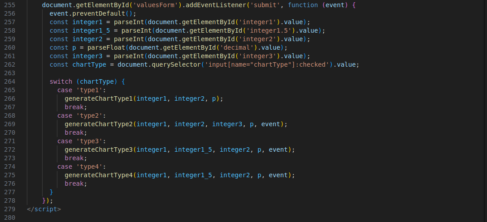

Homework 5
Theory
Proof of the Cauchy-Schwarz Inequality
The Cauchy-Schwarz inequality states that for any vectors \(\mathbf{a}\) and \(\mathbf{b}\) in an inner product space, the following inequality holds: \[|\langle \mathbf{a}, \mathbf{b} \rangle| \leq \|\mathbf{a}\| \|\mathbf{b}\|\] where \(\langle \mathbf{a}, \mathbf{b} \rangle\) denotes the inner product of \(\mathbf{a}\) and \(\mathbf{b}\), and \(\|\mathbf{a}\|\) and \(\|\mathbf{b}\|\) denote the norms of \(\mathbf{a}\) and \(\mathbf{b}\), respectively.- Consider the vector form: For any two vectors \(\mathbf{a}\) and \(\mathbf{b}\), and any scalar \(t \in \mathbb{R}\), the expression \[\| \mathbf{a} + t \mathbf{b} \|^2 \geq 0\] must be non-negative because the squared norm of any vector is always non-negative.
- Expand the norm: Using the definition of the inner product, expand \(\| \mathbf{a} + t \mathbf{b} \|^2\): \[\| \mathbf{a} + t \mathbf{b} \|^2 = \langle \mathbf{a} + t \mathbf{b}, \mathbf{a} + t \mathbf{b} \rangle.\] Expanding this inner product gives: \[= \langle \mathbf{a}, \mathbf{a} \rangle + 2t \langle \mathbf{a}, \mathbf{b} \rangle + t^2 \langle \mathbf{b}, \mathbf{b} \rangle.\] Using the norm notation, we rewrite this as: \[= \|\mathbf{a}\|^2 + 2t \langle \mathbf{a}, \mathbf{b} \rangle + t^2 \|\mathbf{b}\|^2.\]
- Apply the quadratic inequality: Since \(\| \mathbf{a} + t \mathbf{b} \|^2 \geq 0\), we have: \[\|\mathbf{a}\|^2 + 2t \langle \mathbf{a}, \mathbf{b} \rangle + t^2 \|\mathbf{b}\|^2 \geq 0.\] This is a quadratic expression in \(t\), which must have a non-negative discriminant for the inequality to hold for all \(t\).
- Set up the discriminant: The discriminant of this quadratic in \(t\) is: \[(2 \langle \mathbf{a}, \mathbf{b} \rangle)^2 - 4 \|\mathbf{a}\|^2 \|\mathbf{b}\|^2 = 4 \langle \mathbf{a}, \mathbf{b} \rangle^2 - 4 \|\mathbf{a}\|^2 \|\mathbf{b}\|^2.\] For this discriminant to be non-positive, we must have: \[\langle \mathbf{a}, \mathbf{b} \rangle^2 \leq \|\mathbf{a}\|^2 \|\mathbf{b}\|^2.\] Taking the square root of both sides, we get the desired inequality: \[|\langle \mathbf{a}, \mathbf{b} \rangle| \leq \|\mathbf{a}\| \|\mathbf{b}\|.\]
Concepts of Independence and Uncorrelation
Independence
Two random variables \(X\) and \(Y\) are independent if the occurrence of one does not affect the probability distribution of the other. Mathematically, \(X\) and \(Y\) are independent if and only if: \[P(X \leq x, Y \leq y) = P(X \leq x) P(Y \leq y) \quad \text{for all } x \text{ and } y.\] This definition extends to events and functions of random variables as well, preserving the property that knowing one variable gives no information about the other. Independence is a strong condition, implying that all moments (not just the first and second) are uncorrelated.Uncorrelation
Two random variables X and Y are uncorrelated if their covariance is zero: \[\text{Cov}(X, Y) = \mathbb{E}[(X - \mathbb{E}[X])(Y - \mathbb{E}[Y])] = 0.\] Uncorrelatedness means that \(X\) and \(Y\) have no linear relationship, i.e., the expected product of their deviations from their means is zero. However, uncorrelation does not imply independence. For example, if \(X\) is uniformly distributed on \([-1, 1]\) and \(Y = X^2\) , then \(X\) and \(Y\) are uncorrelated (since \(\mathbb{E}[X] = 0\)), but they are clearly dependent.Conceptual Differences and Measures
- Independence implies uncorrelation, but the converse is not true.
- Independence is a stronger concept: it encompasses all kinds of relationships (linear and nonlinear), whileuncorrelation only ensures that there is no linear relationship.
Measures
- Correlation coefficient \(r\) : Measures linear dependence; \(r = 0\) implies uncorrelation but not independence.
- Mutual information: Measures any kind of dependency (linear or nonlinear) between \(X\) and \(Y\). \(I(X; Y) = 0\) if andonly if \(X\) and \(Y\) are independent.
Practical
E-M Simulator Enhancement
Enhance your existing Euler-Maruyama (E-M) simulator by developing a unified simulation framework. Create a general central class that can possibly manage various types of stochastic differential equations (SDEs).
Please fill the forms below to generate the chart
Code Explanation
Most of the code is the same as the previous homework. Below there are the only few relevant changes in this homework.
HTML form to get all together
The only relevant change is in the HTML form management, where now based on the type of chart selection will re-use the previous homework codes in order to generate the asked chart.
